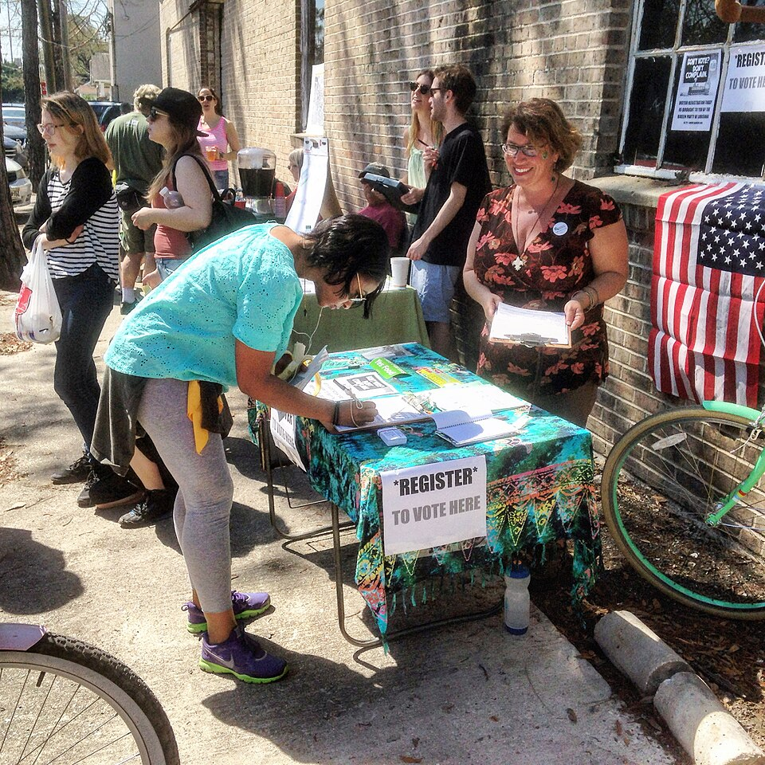
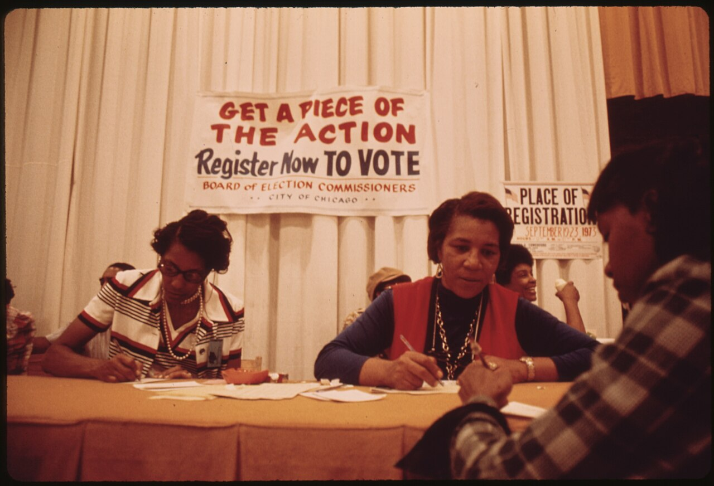
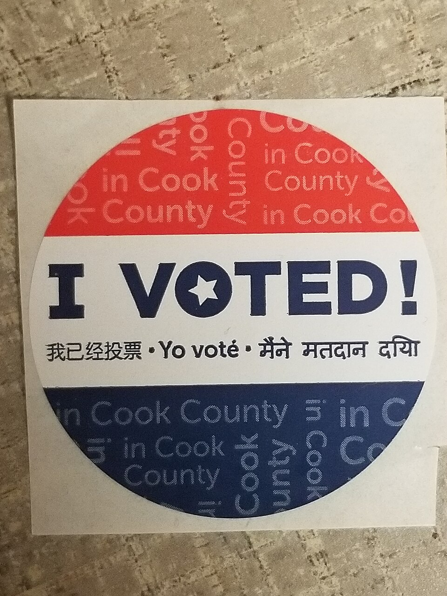
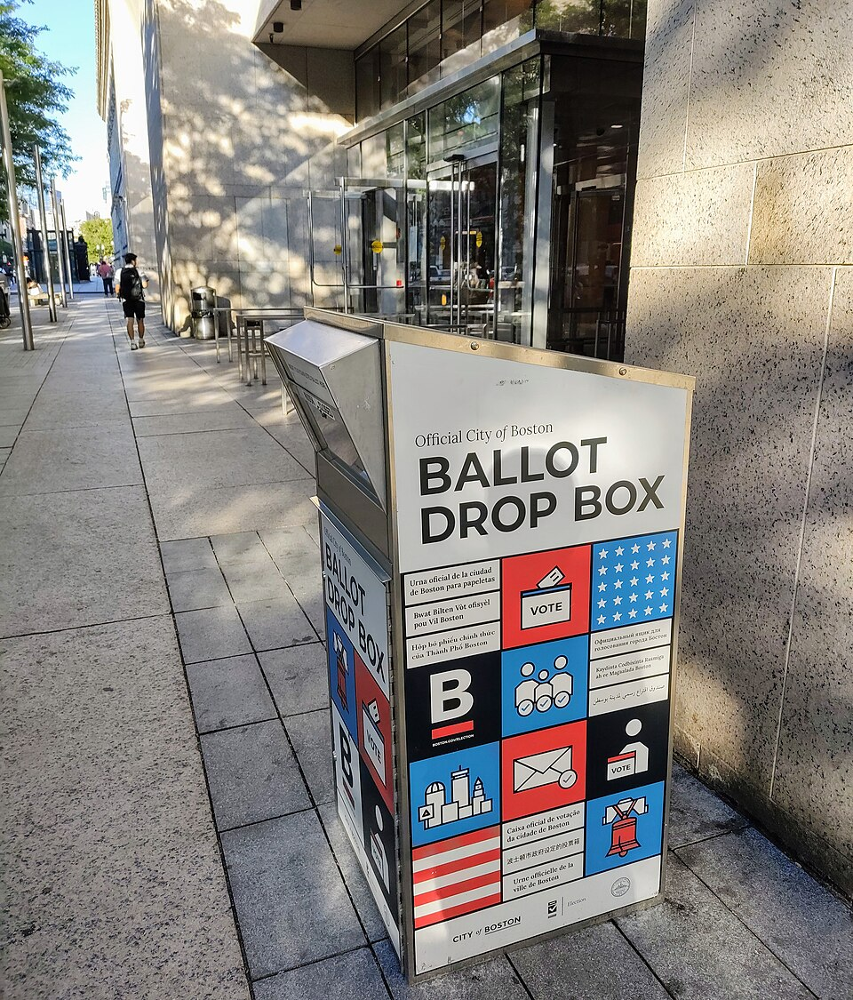
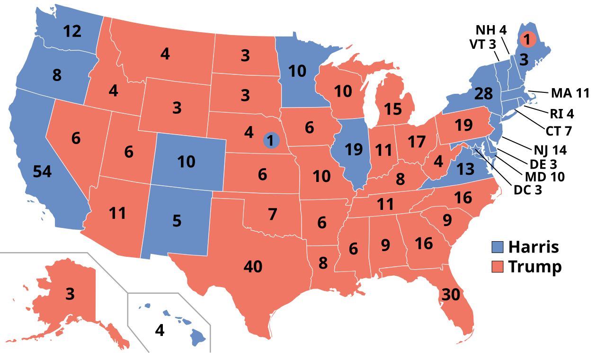

Master the democratic process from registration to Election Day, and discover how citizens shape American government through their votes!
Explore registration requirements, the Voting Rights Act, and how states manage voter rolls.
Discover what drives people to vote and why many citizens stay home on Election Day.
Learn about campaign finance, the nomination process, and the Electoral College.
Understand campaign strategies, technology's role, and how voters make decisions.
Examine initiatives, referendums, recalls, and citizen-driven lawmaking.
Generate your completion certificate and review your achievements.
Before most voters are allowed to cast a ballot, they must register to vote in their state. This process may be as simple as checking a box on a driver's license application or as difficult as filling out a long form with complicated questions. Registration allows governments to determine which citizens are allowed to vote and, in some cases, from which list of candidates they may select a party nominee. Ironically, while government wants to increase voter turnout, the registration process may prevent various groups of citizens and non-citizens from participating in the electoral process.


Elections are state-by-state contests. They include general elections for president and statewide offices (e.g., governor and U.S. senator), and they are often organized and paid for by the states. Because political cultures vary from state to state, the process of voter registration similarly varies. For example, suppose an 85-year-old retiree with an expired driver's license wants to register to vote. He or she might be able to register quickly in California or Florida, but a current government ID might be required prior to registration in Texas or Indiana.
While the Supreme Court determined that grandfather clauses were unconstitutional in 1915, states continued to use poll taxes and literacy tests to deter potential voters from registering. States also ignored instances of violence and intimidation against African Americans wanting to register or vote.
+15 points! The ratification of the Twenty-Fourth Amendment in 1964 ended poll taxes, but the passage of the Voting Rights Act (VRA) in 1965 had a more profound effect.
The act protected the rights of minority voters by prohibiting state laws that denied voting rights based on race. The VRA gave the attorney general of the United States authority to order federal examiners to areas with a history of discrimination. These examiners had the power to oversee and monitor voter registration and elections. States found to violate provisions of the VRA were required to get any changes in their election laws approved by the U.S. attorney general or by going through the court system.
Dramatic Results: In Mississippi, only 6.7 percent of Black people were registered to vote in 1965; however, by the fall of 1967, nearly 60 percent were registered. Alabama experienced similar effects, with African American registration increasing from 19.3 percent to 51.6 percent.
+15 points! In Shelby County v. Holder (2013), the Supreme Court, in a 5–4 decision, threw out the standards and process of the VRA, effectively gutting the landmark legislation.
This decision effectively pushed decision-making and discretion for election policy in VRA states to the state and local level. Several such states subsequently made changes to their voter ID laws and North Carolina changed its plans for how many polling places were available in certain areas.
This is the legal avenue through which legislators in scores of U.S. states in 2021 have introduced legislation to make voter registration requirements more stringent and to limit options in terms of voting methods. The extent to which such changes will violate equal protection is unknown in advance, but such changes often do not have a neutral effect.
Following the implementation of the VRA, many states have sought other methods of increasing voter registration. Several states make registering to vote relatively easy for citizens who have government documentation. Oregon has few requirements for registering and registers many of its voters automatically. North Dakota has no registration at all.
| Registration Method | Description | Key Details |
|---|---|---|
| Online Registration | Register via state websites using driver's license information | First offered by Arizona in 2002; over 18 states now offer this. Cost: $250,000-$750,000 to implement. |
| Same-Day Registration | Register and vote on Election Day with proof of residency | Maine first implemented in 1973; 14 states + D.C. now allow it. Results in 4% higher turnout. |
| Automatic Registration | Citizens automatically registered when they turn 18 or interact with state agencies | Oregon pioneered this approach using DMV records; updates occur when licenses are updated. |
| Motor Voter (1993) | Register when applying for driver's license or Social Security benefits | Increased registrations by 7% but didn't dramatically increase turnout initially. |
+15 points! The National Voter Registration Act (1993), often referred to as Motor Voter, was enacted to expedite the registration process and make it as simple as possible for voters.
The act required states to allow citizens to register to vote when they sign up for driver's licenses and Social Security benefits. On each government form, the citizen need only mark an additional box to also register to vote.
Unfortunately, while increasing registrations by 7 percent between 1992 and 2012, Motor Voter did not dramatically increase voter turnout. In fact, for two years following the passage of the act, voter turnout decreased slightly. It appears that the main users of the expedited system were those already intending to vote. One study, however, found that preregistration may have a different effect on youth—in Florida, it increased turnout of young voters by 13 percent.
The National Commission on Voting Rights completed a study in September 2015 that found state registration laws can either raise or reduce voter turnout rates, especially among citizens who are young or whose income falls below the poverty line. States with simple voter registration had more registered citizens.
In all states except North Dakota, a citizen wishing to vote must complete an application. Whether the form is online or on paper, prospective voters will list their name, residency address, and in many cases party identification (with Independent as an option) and affirm that they are competent to vote.
Beyond these requirements, there may be an oath administered or more questions asked, such as about felony convictions. If the application is completely online and the citizen has government documents (e.g., driver's license or state identification card), the system will compare the application to other state records and accept an online signature or affidavit if everything matches up correctly.
+15 points! During the 2000 election, in which George W. Bush won Florida's electoral votes by a slim majority, attention turned to the state's election procedures and voter registration rolls. Journalists found that many states, including Florida, had large numbers of phantom voters on their rolls—voters who had moved or died but remained on the states' voter registration rolls.
The Help America Vote Act of 2002 (HAVA) was passed in order to reform voting across the states and reduce these problems. As part of the Act, states were required to:
In order to be eligible to vote in the United States, a person must be a citizen, resident, and eighteen years old. But states often place additional requirements on the right to vote. The most common requirement is that voters must be deemed competent and not currently serving time in jail.
Beyond those jailed, some citizens have additional expectations placed on them when they register to vote. Wisconsin requires that voters "not wager on an election," and Vermont citizens must recite the "Voter's Oath" before they register, swearing to cast votes with a conscience and "without fear or favor of any person."
Across the United States, over twenty million college and university students begin classes each fall, many away from home. The simple act of moving away to college presents a voter registration problem. Elections are local—each citizen lives in a district with state legislators, city council or other local elected representatives, a U.S. House of Representatives member, and more.
Voting Back Home: Legal in most states if student holds only temporary residency at school. Students are likely more familiar with local politicians and issues. But it requires either going home to vote or applying for an absentee ballot. One study found students living more than two hours from home were less likely to vote than students living within thirty minutes of campus.
Voting Near Campus: Makes it easier to vote but requires an extra step. In many states, registration takes place in October, just when students are acclimating to the semester. Students must become familiar with local candidates and issues. But they won't have to travel to vote, and their vote is more likely to affect their college and local town.
Campaign managers worry about who will show up at the polls on Election Day. Will more Republicans come? More Democrats? Will a surge in younger voters occur this year, or will an older population cast ballots? We can actually predict with strong accuracy who is likely to vote each year, based on identified influence factors such as age, education, and income. Campaigns will often target each group of voters in different ways, spending precious campaign dollars on the groups already most likely to show up at the polls rather than trying to persuade citizens who are highly unlikely to vote.

Low voter turnout has long caused the media and others to express concern and frustration. A healthy democratic society is expected to be filled with citizens who vote regularly and participate in the electoral process. People like Stacey Abrams, who founded Fair Fight Action in 2018, and organizations such as the League of Women Voters and Project Vote Smart work hard to increase voter turnout in all age groups across the United States. But just how low is voter turnout? The answer depends on who is calculating it and how.
+15 points! How we measure turnout matters! In the 2024 presidential election:
Those who argue that a healthy democracy needs high voter turnout will look at the voting-age population or voting-eligible population as proof that the United States has a problem. Those who believe only informed and active citizens should vote point to the registered voter turnout numbers instead.
Comparison Caution: If one compares the percentage of registered voters who voted in 2024 (84%) versus 2020 (77%), it would seem as if voter turnout had increased significantly. However, looking at VEP percentages (64% in 2024 vs. 67% in 2020) shows that is not the case—the pool of registered voters was smaller, and total votes cast actually decreased by over 3.4 million.
Political parties and campaign managers approach every population of voters differently, based on what they know about factors that influence turnout. Everyone targets likely voters—the category of registered voters who vote regularly. Most campaigns also target registered voters in general, because they are more likely to vote than unregistered citizens.
| Factor | Impact on Turnout | Key Statistics |
|---|---|---|
| Age | Older voters much more likely to vote | 18-24: ~39% turnout; 65-74: ~68% turnout (2016) |
| Education | Higher education = higher turnout | College graduates: 80%; No college degree: 60% (2020) |
| Income | Higher income = higher turnout | $150,000+: over 80%; Under $25,000: 55% |
| Race | White voters have highest turnout historically | White: 71%; Black: 63%; Asian: 59%; Hispanic: 54% (2020) |
| Gender | Women vote at slightly higher rates | Women: 63.3%; Men: 59.3% (2016) |
+15 points! Those between eighteen and twenty-five are least likely to vote. Several factors explain this:
Efforts to Engage Youth: Rock the Vote began in 1990, bringing music, art, and pop culture together to encourage youth participation. In 2018, former first lady Michelle Obama founded "When We All Vote" with co-chairs including Tom Hanks, Selena Gomez, Lin-Manuel Miranda, and Chris Paul.
In 2008, for the first time since 1972, a presidential candidate intrigued America's youth and persuaded them to flock to the polls in record numbers. Barack Obama not only spoke to young people's concerns but his campaign also connected with them via technology, wielding texts and tweets to bring together a new generation of voters.
Since the 1971 passage of the Twenty-Sixth Amendment, which lowered the voting age from 21 to 18, voter turnout in the under-25 range has been low. While opposition to the Vietnam War sent 50.9 percent of 21- to 24-year-old voters to the polls in 1964, after 1972, turnout dropped below 40 percent. In 2008, it briefly increased to 45 percent from only 32 percent in 2000. Yet, despite high interest, only 38 percent showed up in 2012.
Over the years, studies have explored why a citizen might not vote. The reasons range from the obvious excuse of being too busy (19 percent) to more complex answers, such as transportation problems (3.3 percent) and restrictive registration laws (5.5 percent).
+15 points! One prominent reason for low national voter turnout is that participation is not mandated in the U.S. Some countries have compulsory voting laws:
Cautionary Example: Chile's decision to move from compulsory voting to voluntary voting caused a dramatic drop in participation from 87 percent to 46 percent!
+15 points! Low turnout also occurs when some citizens are not allowed to vote. One method of limiting voter access is the requirement to show identification at polling places.
Crawford v. Marion County (2008): The Supreme Court decided that Indiana's strict photo identification law was constitutional, though left open the possibility that another case might meet the burden of proof required to overturn such laws.
Texas's Law: In 2011, Texas passed a strict photo identification law allowing concealed-handgun permits as identification but not student identification. The law was initially blocked by the Obama administration before Shelby County v. Holder removed preclearance requirements.
Impact Research: A Reuters study found that requiring a photo ID would disproportionally prevent citizens aged 18–24, Hispanics, and those without a college education from voting. 4 percent of households with yearly incomes under $25,000 said they did not have valid voting ID.
Apathy: Some people avoid voting because their vote is unlikely to make a difference or the election is not competitive. Democrats in Utah and Republicans in California are so outnumbered that they are unlikely to affect the outcome of an election. These citizens, as well as those who vote for third parties like the Green Party or the Libertarian Party, are sometimes referred to as the chronic minority.
Voter Fatigue: In many states, due to our federal structure with elections at many levels of government, voters may vote many times per year on ballots filled with candidates and issues to research. The less time there is between elections, the lower the turnout.
Social Protest and Volunteering: Some voters may view non-voting as a means of social protest or may see volunteering as a better way to spend their time. Younger voters are more likely to volunteer their time rather than vote, believing that serving others is more important than voting.
Elections offer American voters the opportunity to participate in their government with little investment of time or personal effort. Yet voters should make decisions carefully. The electoral system allows them the chance to pick party nominees as well as office-holders, although not every citizen will participate in every step. The presidential election is often criticized as a choice between two evils, yet citizens can play a prominent part in every stage of the race and influence who the final candidates actually are.

Running for office can be as easy as collecting one hundred signatures on a city election form or paying a registration fee of several thousand dollars to run for governor of a state. However, a potential candidate still needs to meet state-specific requirements covering length of residency, voting status, and age. Potential candidates must also consider competitors, family obligations, and the likelihood of drawing financial backing.
In the 2024 presidential election cycle, candidates for all parties raised a total of 5.5 billion dollars for campaigns. Congressional candidates raised $10.3 billion. Political action committees (PACs) raised approximately $2.7 billion.
Federal law prohibited government employees from asking Naval Yard employees for donations.
Prohibited corporations from contributing money to candidates running in federal elections.
Required candidates to report all contributions and expenditures. Created rules for organizations and companies contributing to federal campaigns, allowing the creation of PACs.
An amendment to FECA created the FEC, which operates independently of government and enforces election laws.
Restricted soft money to political parties, prohibited coordination between candidates and PAC campaigns, required personal endorsements in ads, and limited union/corporate ads before elections.
Supreme Court ruled that corporate funding of independent political expenditures is protected speech, leading to the creation of Super PACs.
+15 points! The Citizens United ruling allowed corporations to place unlimited money into Super PACs (Independent Expenditure-Only Committees).
Super PAC Rules:
2020 Statistics: The Senate Leadership Fund (conservative) spent $293.7 million; the Senate Majority PAC (liberal) spent $230.4 million. Total Super PAC expenditure was $2.13 billion.
Current Limits: Individuals may contribute up to $3,300 per candidate per election. PACs contributing to multiple candidates may give $5,000 per candidate per election and up to $15,000 to a national party.
+15 points! Large states like California, Florida, Michigan, and Wisconsin are often frustrated that they must wait to hold their presidential primary elections later in the season—candidates who do poorly in early primaries often drop out entirely.
Frontloading: When states schedule the majority of primaries and caucuses at the beginning of the primary season. In 2008, California, New York, and several other states scheduled their primaries the first week of February, causing Florida and Michigan to move theirs to January.
Party Response: National political parties can change a state's delegate count as punishment. Both parties ruled that only Iowa, South Carolina, and New Hampshire could hold primaries or caucuses in January, and reduced delegates from Michigan and Florida for violating this rule in 2008.
Although the Constitution explains how candidates for national office are elected, it is silent on how those candidates are nominated. Political parties have taken on the role of promoting nominees for offices. Because there are no national guidelines, there is much variation in the nomination process.
| Primary Type | Who Can Vote | Key Features |
|---|---|---|
| Closed Primary | Only members of the political party selecting nominees | Parties prefer this; ensures nominees are picked by legitimate party supporters |
| Open Primary | All registered voters regardless of party | More inclusive but may allow "strategic voting" by opposing party members |
| Top-Two Primary | All voters vote for any candidate | Top two vote-getters advance; can result in same-party general election (e.g., California) |
+15 points! The Iowa Democratic Caucus is well-known for its spirited nature:
Pros: More interesting than primaries, brings out more sophisticated voters, more transparent, local party members see the election outcome and pick delegates directly.
Cons: Takes 2-3 hours, intimidating to less experienced voters, typically 20% lower turnout than primaries.
Once the voters have cast ballots in November and all the election season madness comes to a close, races for governors and local representatives may be over, but the constitutional process of electing a president has only begun. The electors of the Electoral College travel to their respective state capitols and cast their votes in mid-December.

+15 points! While rare, there are examples of faithless electors who don't vote as expected:
Electors' names and votes are publicly available on electoral certificates, scanned and documented by the National Archives.
Presidential elections garner the most attention from the media and political elites. Yet they are not the only important elections. The even-numbered years between presidential years are reserved for congressional elections—sometimes referred to as midterm elections because they are in the middle of the president's term.
Campaign managers know that to win an election, they must do two things: reach voters with their candidate's information and get voters to show up at the polls. To accomplish these goals, candidates and their campaigns will often try to target those most likely to vote. Unfortunately, these voters change from election to election and sometimes from year to year. Primary and caucus voters are different from voters who vote only during presidential general elections. Some years see an increase in younger voters turning out to vote. Elections are unpredictable, and campaigns must adapt to be effective.
Even with a carefully planned and orchestrated presidential run, early fundraising is vital for candidates. Money helps them win, and the ability to raise money identifies those who are viable. In fact, the more money a candidate raises, the more they will continue to raise.
+15 points! The Democratic field in 2020 was crowded before winnowing down early in March. Here were the cash-on-hand amounts when candidates dropped out:
Bernie Sanders dropped out on April 8 with $16,176,082 remaining, leaving Biden to sail to the nomination.
Primary elections are more difficult for the voter. There are more candidates vying to become their party's nominee, and party identification is not a useful cue because each party has many candidates rather than just one. Voters must find more information about each candidate to decide which is closest to their preferred issue positions.
+15 points! By the general election, each party has only one candidate, and campaign ads must accomplish different goals with different voters:
Famous Example: President Lyndon B. Johnson's "Daisy Girl" ad cut from a little girl counting daisy petals to an atomic bomb, implying that if voters stayed home, opponent Barry Goldwater might start atomic war. The ad aired once as a paid ad before being pulled, but gained massive news coverage.
Campaigns have always been expensive—and sometimes negative and nasty. The 1828 "Coffin Handbill" that John Quincy Adams ran listed the names and circumstances of executions Andrew Jackson had ordered, in addition to gossip against Jackson's wife.
+15 points! Once television became a fixture in homes, campaign advertising moved to the airwaves. Television allowed candidates to connect with voters through video, appealing directly and emotionally.
The Kennedy-Nixon Debate (1960):
This demonstrated that answering questions well is not the only way to impress voters—appearance and delivery matter enormously.
+15 points! The Internet has given candidates new platforms to target voters:
When citizens do vote, how do they make their decisions? The election environment is complex and most voters don't have time to research everything about the candidates and issues. Yet they will need to make a fully rational assessment of the choices for an elected office. To meet this goal, they tend to take shortcuts.
| Voting Approach | Definition | Example |
|---|---|---|
| Retrospective Voting | Looking at candidate's past actions and past economic climate to decide | Holding politicians accountable during economic downturns or after scandals |
| Pocketbook Voting | Looking at personal finances and circumstances to decide | Voting against incumbents when having trouble finding employment |
| Prospective Voting | Applying information about past behavior to predict future performance | Evaluating whether a candidate's record suggests they can handle an economic downturn |
| Strategic Voting | Voting for second or third choice to prevent another candidate from winning | Green Party voters in Florida voting Democrat to prevent Republican wins |
+15 points! In congressional and local elections, incumbents win reelection up to 90% of the time! Why?
2020 Statistics: House members won reelection 95% of the time; Senators only 84%—because senators can't benefit from gerrymandering.
The majority of elections in the United States are held to facilitate indirect democracy. Elections allow the people to pick representatives to serve in government and make decisions on the citizens' behalf. Representatives pass laws, implement taxes, and carry out decisions. Although direct democracy had been used in some of the colonies, the framers of the Constitution granted voters no legislative or executive powers, because they feared the masses would make poor decisions and be susceptible to whims.
During the Progressive Era, however, governments began granting citizens more direct political power. States that formed and joined the United States after the Civil War often assigned their citizens some methods of directly implementing laws or removing corrupt politicians. Citizens now use these powers at the ballot to change laws and direct public policy in their states.
Local Direct Democracy allows citizens to propose and pass laws that affect local towns or counties. Towns in Massachusetts, for example, may choose to use town meetings—meetings comprised of the town's eligible voters—to make decisions on budgets, salaries, and local laws.
Statewide Direct Democracy allows citizens to propose and pass laws that affect state constitutions, state budgets, and more. Most states in the western half of the country allow citizens all forms of direct democracy, while most states on the eastern and southern regions allow few or none of these forms. States that joined the United States after the Civil War are more likely to have direct democracy, possibly due to the influence of Progressives during the late 1800s and early 1900s.
| Form | Definition | Key Features |
|---|---|---|
| Legislative Referendum | Legislature passes a law or constitutional amendments and presents them to voters for ratification | Voters confirm or repeal with yes/no vote; includes judicial confirmations |
| Popular Referendum | Citizens petition to place a referendum on ballot to repeal legislation enacted by state government | Gives citizens limited power; cannot overhaul policy or circumvent government |
| Initiative/Proposition | Law or constitutional amendment proposed and passed by citizens | Completely bypasses legislatures and governors; most common form; subject to court review |
| Recall | Allows voters to decide whether to remove a government official from office | Less common; can be contentious and expensive |
+15 points! The process to pass an initiative is not easy and varies from state to state:
California Example: Requires 5% of last gubernatorial election votes for a law (623,212 signatures through 2022) or 8% for an amendment (997,139 signatures). California had 12 ballot measures on the 2020 general election ballot.
+15 points! Direct democracy requires more of voters than simply choosing a party. When citizens rely on television ads, initiative titles, or advice from others in determining how to vote, they can become confused and make mistakes.
California Proposition 8 (2008): Titled "Eliminates Rights of Same-Sex Couples to Marry," a yes vote meant a voter wanted to define marriage as only between a woman and man. Even though the information was clear and the law was one of the shortest in memory, many voters were confused:
This example shows why direct democracy ballot items regularly earn fewer votes than the choice of a governor or president.
+15 points! The recall is one of the more unusual forms of direct democracy:
California 2003: Governor Gray Davis was recalled and replaced by Arnold Schwarzenegger in perhaps the most famous recall election. Representative Darrell Issa (R-CA) donated $2 million to help the organization attain nearly one million signatures during the signature collection phase.
Wisconsin 2012: The attempt by voters to recall Governor Scott Walker shows how contentious and expensive a recall can be. Walker spent over $60 million in the election to retain his seat.
These examples show that direct democracy is not always a process "by the people," but rather can be a process used by the wealthy and business interests to push personal projects.
California was the first state to allow medical marijuana use after Proposition 215 in 1996. In Gonzales v. Raich (2005), the Supreme Court ruled the U.S. government had authority to criminalize marijuana use. In 2009, Attorney General Eric Holder said the federal government would not prosecute patients using marijuana medically.
Colorado voters approved recreational marijuana use in 2012. Since then, 42 states and D.C. now have laws legalizing marijuana to varying degrees—in many cases through initiatives and direct democracy.
The Problem: While citizens of these states believe marijuana should be legal, the U.S. government does not. The Controlled Substances Act (1970) declares marijuana a dangerous drug. States have a legal obligation to enforce state laws, yet also must follow federal laws. Citizens using marijuana legally in their state are not using it legally in their country.
Use your browser's "Save as PDF" option. Submit this PDF — screenshots will not be accepted.
Chapter 7: Voting and Elections
| Section | Status | Points | Time Spent |
|---|